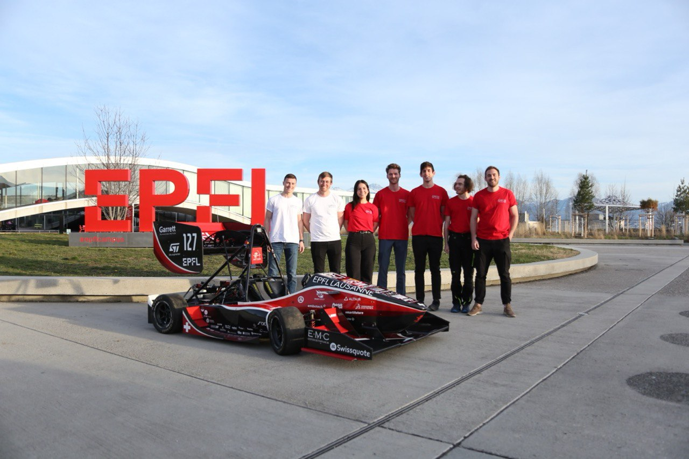
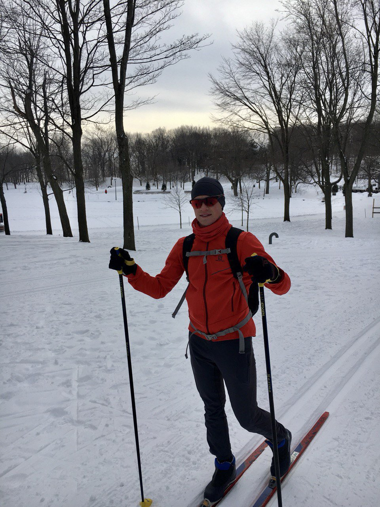

Hi there,
I'm Alexandre Vray
Beyond engineering, I am
Beyond engineering, I am


Beyond engineering, I’m driven by curiosity, challenge, and human connection. The mountains are my playground, where I push my limits through skiing, climbing, and endurance sports. I love turning ideas into tangible projects, learning by doing, and sharing meaningful experiences through sport and community.
"Every race is a lesson in perseverance. Every finish line is a new beginning."


Took part in the 20 km of Balexert, accompanying children with disabilities.
Raised funds for breast cancer awareness.

Participated in various events to support the team beyond engineering
Competed in various triathlons and supported team members in their training.
I love learning and exploring through personal projects. Every discovery feeds my curiosity and shapes who I am.

"The capacity to learn is a gift; the ability to learn is a skill; the willingness to learn is a choice."